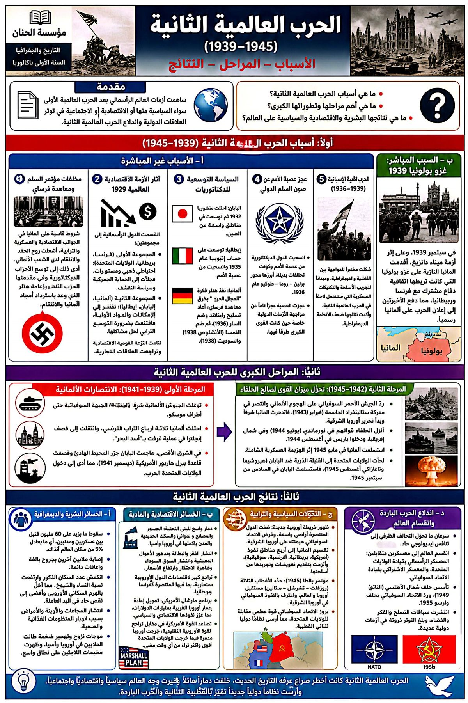
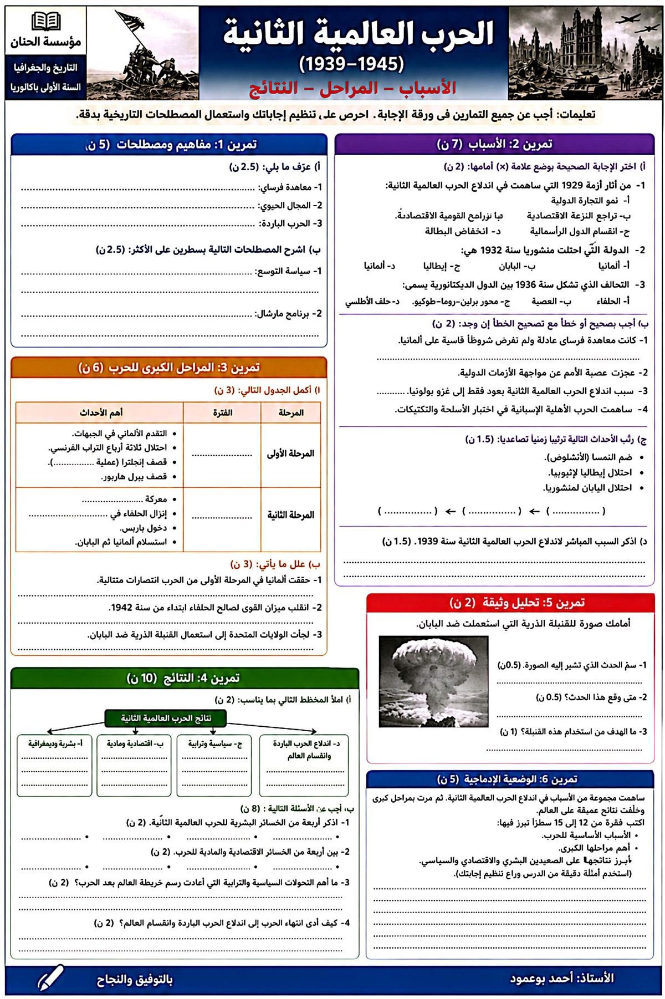

مؤسسة الحنان للتعليم الخاص
مادة التاريخ والجغرافيا
الموسم الدراسي
2025 / 2026
2025 / 2026
مادة التاريخ | المستوى: الأولى باكالوريا
الحرب العالمية الثانية: الأسباب والمراحل والنتائج
الدرس السابع · التاريخ📘
مقدمة
اندلعت الحرب العالمية الثانية نتيجة تراكم مخلفات معاهدة فرساي وتداعيات أزمة 1929 وعجز عصبة الأمم عن كبح التوسعات الديكتاتورية (سياسة المجال الحيوي). وانتهت بتغييرات بشرية ومادية هائلة، وتقسيم العالم إلى معسكرين، وتأسيس هيئة الأمم المتحدة لحفظ الأمن.
❓
الإشكالية المركزية
ما أسباب الحرب العالمية الثانية ومراحلها الكبرى؟ وما نتائجها البشرية والمادية والسياسية على العالم؟
📜 أسباب غير مباشرة
الرغبة في التخلص من قيود معاهدة فرساي، وعجز الديمقراطيات وعصبة الأمم، وتطبيق سياسة المجال الحيوي (توسعات اليابان في الصين، وإيطاليا في الحبشة، وألمانيا في أوروبا).
🔥 السبب المباشر
غزو ألمانيا النازية لبولندا في 1 شتنبر 1939م.
① المرحلة الأولى (1939-1942)
شهدت الانتصارات الكاسحة لدول المحور على مختلف الجبهات.
② المرحلة الثانية (1942-1945)
دخول الولايات المتحدة الأمريكية الحرب وانقلاب الموازين لصالح الحلفاء، واستسلام اليابان بعد القنبلتين الذريتين.
💀 نتائج بشرية ومادية
ملايين القتلى والمشوّهين، ودمار شامل للبنية التحتية، وانهيار الاقتصاد الأوروبي والياباني.
🌐 نتائج سياسية
بروز القطبية الثنائية والحرب الباردة (المعسكر الغربي بقيادة و.م.أ والشرقي بقيادة الاتحاد السوفياتي)، وتأسيس هيئة الأمم المتحدة سنة 1945.
دول المحور
التحالف العسكري الذي ضمّ الديكتاتوريات التوسعية: ألمانيا وإيطاليا واليابان.
الحلفاء
التحالف المضاد الذي انتصر في الحرب، وضمّ أساسًا فرنسا وبريطانيا و.م.أ والاتحاد السوفياتي.
المجال الحيوي
سياسة التوسع الألمانية التي نهجها هتلر لتوفير الموارد والمجال الكافي لرفاهية الشعب الألماني.
هيئة الأمم المتحدة
منظمة دولية حلّت محل عصبة الأمم سنة 1945 لضمان السلم والتعاون الدولي على أسس أكثر صرامة.
📝
مهمة تدريبية
اكتب فقرة تبرز فيها التغييرات الجذرية التي أحدثتها نتائج الحرب العالمية الثانية على الخريطة السياسية للعالم.
إنفوغرافيا الدرس ونسخة التمارين من كتيب الأستاذ أحمد بوعمود:

{kind=link}

{kind=link}
✍️
خاتمة
أعادت الحرب العالمية الثانية تشكيل موازين القوى الدولية، فبرزت القطبية الثنائية والحرب الباردة، وتأسست هيئة الأمم المتحدة، وتنامت حركات التحرر التي ستقود شعوب المستعمرات نحو الاستقلال.
إعداد: الأستاذ أحمد بوعمود — أستاذ الاجتماعيات
مؤسسة الحنان · ahmedbouamoud.com